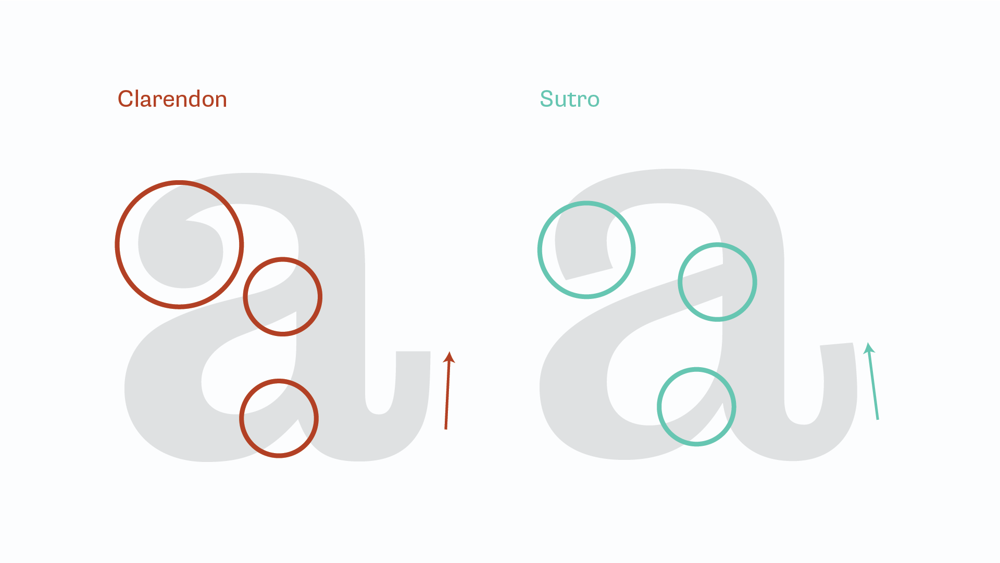
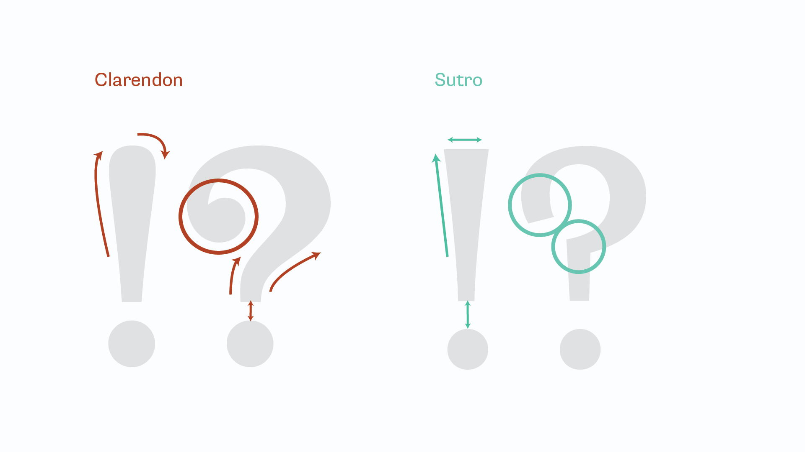

Clarendon is a slab serif typeface designed in 1845 by Robert Besley in London, UK. It was acquired by many other foundries, with the Adobe version being owned by URW Type Foundry, which is based in Germany. It is characterized as bold and sturdy, having a large x-height, strong serifs, and minor contrast in thickness.
Clarendon was the first typeface to ever be patented. Since the patent only lasted three years, it was quickly acquired by many other foundries. In the 20th century, many new versions or revivals were made to Clarendon, catering to different widths, weights, and styles.
The History of Sutro
Sutro's many variations from Parkinson Type Design.
Sutro is a bold slab serif typeface designed in 2003 by Jim Parkinson in Oakland, CA. Jim Parkinson runs the Parkinson Type Design Foundry based in Oakland, CA, specializing in retro and vintage revival typefaces. Sutro has many different variations, from Shaded to Open to Gradient, all of which adds textures and other graphical elements on the typeface. Sutro is characterized by its thick serifs, wide characters, and little contrast in thickness.
Comparison
Summary
When set in the same size, Clarendon and Sutro look similar, but upon further inspection, are distinct. Sutro is slightly more condensed and thinner than Clarendon at regular weight.The contrast between thick and thin strokes is apparent in Sutro’s uppercase. Clarendon feels like a consistent weight despite small variations in the stroke thickness.Clarendon’s numerals strive for attention, with each one commanding enough space to take center stage.
Lowercase characters

Clarendon features curled terminals and smooth joints, while Sutro’s terminals and joints are sharp.Clarendon’s roots in wood-block type shows through with its horizontal serifs and rectangular bowl. On the other hand, Sutro’s serifs angle upwards at a 3-6º angle.Clarendon’s curls make an appearance on the ear of the lowercase ‘g’. Sutro maintains a slant in the counters, while Clarendon keeps them level.While the vertices of Clarendon and Sutro’s lowercase ‘v’ are similar, the joints between their arms and serifs differ by their roundness or sharpness.When laid on top of each other, Clarendon’s heavier and more square nature becomes apparent. Sutro achieves a more contemporary look with thinner strokes and open feel.
Uppercase characters
Compared to Sutro, Clarendon’s more even thickness contributes to a blockier feel. Sutro opens up with thinner lines, more white space, and machine-sharp angles.Focusing on the negative space of the two typefaces’ uppercase ‘E’, we see that Clarendon’s curves contribute significantly to the letter’s weight. Sutro’s sharp corners feel machine-made, while Clarendon’s inner corners look carved by hand.Clarendon and Sutro are similar with the lower spurs on the uppercase ‘G’, but Clarendon’s upper spur mirrors its bottom while Sutro opts for an unembellished serif. Clarendon’s uppercase ‘H’ feels heavier with thicker stems and crossbar, as well as rounded joints taking up more space than Sutro’s 90º angles.In a progression to cut down fluff, Sutro has purely rectangular serifs. Meanwhile, Clarendon adds rounded corners and additional faces to serifs.
Punctuation characters and numbers

Clarendon’s punctuation rarely resorts to sharp angles, preferring flowing lines ending in curls (where possible). Sutro takes the opposite stance, preferring sharp angles to rounded corners.Sutro’s numerals maintain slight angles and sharp corners at their terminals; meanwhile, Clarendon introduces curls at nearly every opportunity.Clarendon’s numeral ‘3’ forms a proper handlebar mustache, while Sutro’s opts for less embellishment.In the numeral ‘7’, Clarendon emphasizes curves and waves but terminates with an upper spur. Sutro mixes curves and hard angles for a modern evolution of slab-serif fonts.Clarendon and Sutro’s silhouettes are similar, but Sutro’s slimmer, more contemporary lines differentiate the two. Clarendon maintains horizontal/vertical lines throughout the character forms while Sutro terminates at an angle.
Main takeaways
Similarities
The most prominent similarities are the periods, the spurs, and the presence of serifs. Since Clarendon and Sutro are both slab serif typefaces, they both have serifs and similar spurs, even if the serifs may look different. Additionally, the periods on their punctuation characters are both circular.
Differences
The most prominent differences between Clarendon and Sutro are the terminals, the serifs, the counters, and the width of the crossbars. Clarendon’s terminals are rounded, whereas Sutro’s terminals are flat. The distance between the serifs of the uppercase H is wider for Sutro than for Clarendon, giving Clarendon a heavier look. The width of the crossbars for Sutro is thinner. The counters for Sutro are generally wider than those for Clarendon.
Examples and visual references
Examples of Clarendon
Clarendon on an NFL field. CreditClarendon on stadium signage. CreditClarendon on packaging. CreditClarendon on US National Park road signs. CreditClarendon on the Sony logo. CreditClarendon on the Wells Fargo logo. Credit
Examples of Sutro
Sutro Deluxe on the nameplate for Typographica, an online blog. CreditSutro on an events calendar. CreditSutro on a digital portfolio. CreditSutro on a Rolling Stone article. CreditSutro on a type specimen book. Credit


{kind=link}